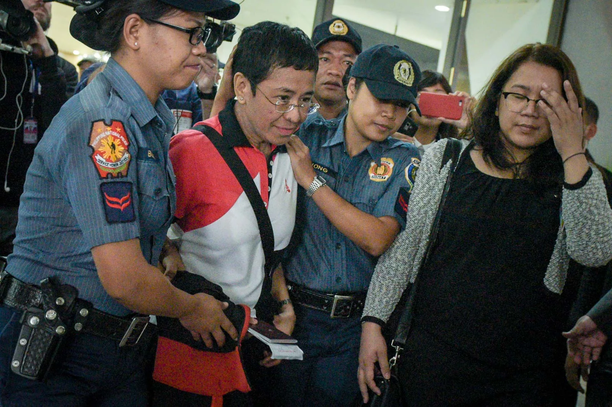
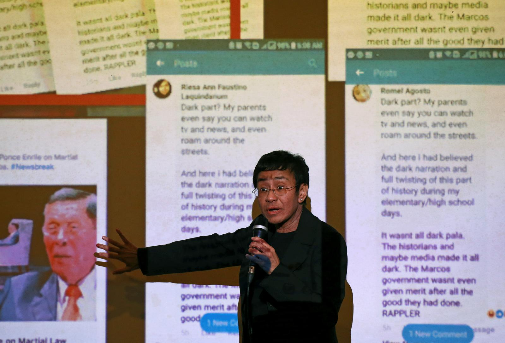
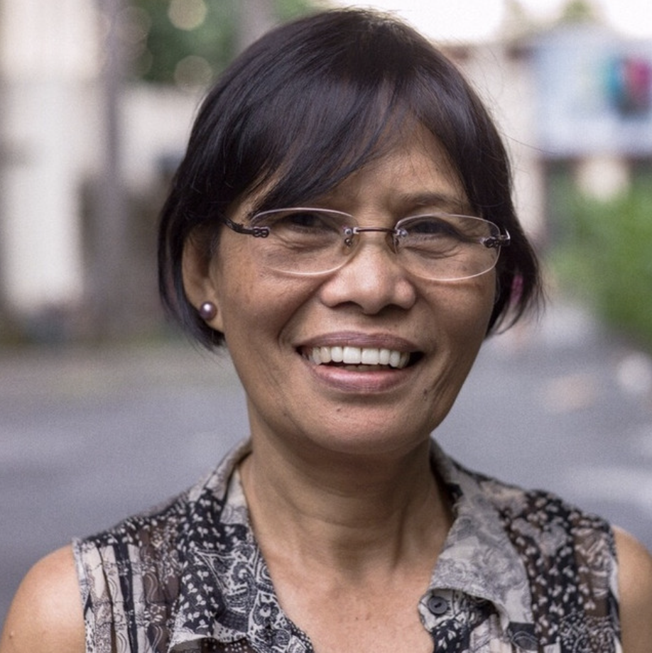
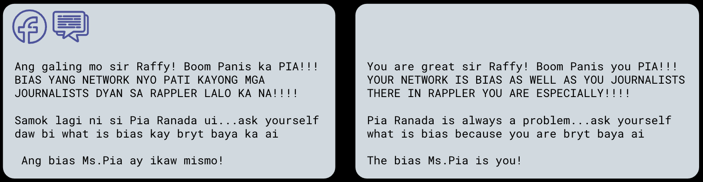
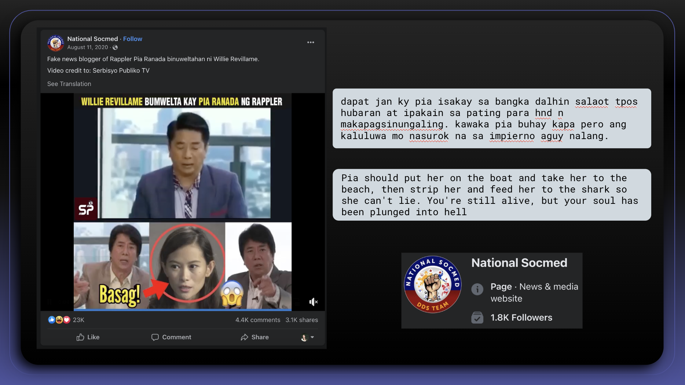
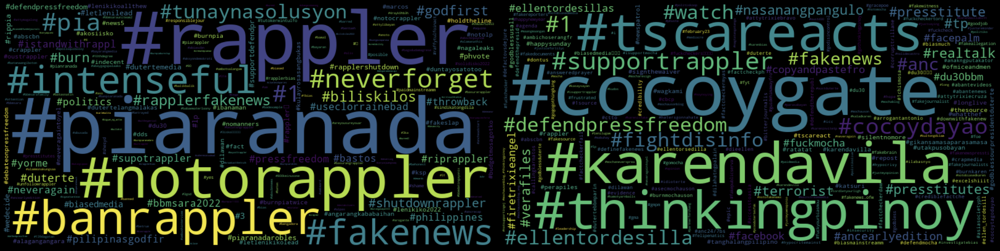

Online Violence Faced By Filipina Journalists and Fighting Back with Data
By Isabel Sieh | Aug 20
________________________________________________
“First I’m attacked for being a journalist, second I’m attacked for being a woman”
- Maria Ressa
Since 2016, Filipina-American journalist Maria Ressa, founder of popular Filipino news site Rappler and now Nobel Laureate, has faced an onslaught of online violence including:
Death threats. Rape threats. Doxxing. Racist, sexist, and misogynistic abuse and memes.
This was due to her reporting on Philippine president at the time, Rodrigo Duterte (2016-2022). When Duterte held the presidency, Ressa and Rappler published numerous investigative reports on Duterte's use of online disinformation to push his political agenda, his severe actions such as extrajudicial killings of users and dealers resulting from the drug war, and of corruption within his government administration.
In response, phrases such as “presstitute”, a term created by pro-Duterte blogger, Mocha Uson (who would go on to become the president’s Communications Assistant Secretary), and tags like #ArrestMariaRessa went viral across Facebook and Twitter. 14% of all online abuse against Ressa was misogynistic and sexist in nature. (1)

This abuse fostered an “enabling environment for Ressa’s persecution and prosecution in the Philippines"(1); in 2020, she faced multiple charges and arrest warrants over cyber libel, which were both ruled by and in turn further fueled the negative narrative created about her online.
Her online abuse speaks to the struggle for press freedom and the normalization of sexism in the Philippines amidst an anti-news agenda introduced by Duterte during his presidency. Gendered harassment towards journalists is “too often dismissed as something that required acceptance as ‘unintended consequence’ of online engagement with audiences”2 . However, Ressa’s case demonstrates that online hate has significant real life consequences.
Her story is one of many Filipina journalists who fear for their safety.
Ressa refused to be silenced; her story is unique in that not only did she fight back, she fought back with data. With a team of researchers she gathered thousands of Twitter and Facebook posts and used data science techniques to uncover patterns, like narratives diminishing her credibility and gendered language, that her attackers. They also found that these were orchestrated attacks by internet users and government officials.

This online phenomenon of online misogynistic attacks and vilification of journalists has its roots in the Philippine’s sociopolitical development in terms of the history between media and politics, gender roles, machismo culture, and the rise of populism, which intersect together in ways that endanger female journalists. Ressa's data collection exposes a story of misogynistic online harassment against her.
How can data uncover more stories of online violence for other Filipina journalists? What do these narratives tell us about the Philippine’s sociopolitical context that enables online violence towards women journalists?
To explore these questions, I took a deep dive into two Filipina journalists: Pia Ranada-Robles and Ellen Tordesillas. I collected and analyzed 54,078 total Facebook texts (42,810 for Ranada-Robles, 11,268 for Tordesillas) including posts, comments, video titles and descriptions, between ~2016 to 2023. These were gathered from a Facebook search for each journalist: “pia ranada” for Ranada-Robles and “ellen tordesillas” for Tordesillas. I visualized the language and timeline of the Facebook posts, then traced these to real-life events in each of the journalist's careers and the sociopolitical contexts in which they occurred.
Why Facebook?
The Philippines’ spends more time on Facebook than any other country; to Filipinos it is the same as the internet. It is also the main platform where Ressa received online violence.
To explore these questions, I took a deep dive into two Filipina journalists: Pia Ranada-Robles and Ellen Tordesillas. I collected and analyzed 54,078 total Facebook texts (42,810 for Ranada-Robles, 11,268 for Tordesillas) including posts, comments, video titles and descriptions, between ~2016 to 2023. These were gathered from a Facebook search for each journalist: “pia ranada” for Ranada-Robles and “ellen tordesillas” for Tordesillas. I visualized the language and timeline of the Facebook posts, then traced these to real-life events in each of the journalist's careers and the sociopolitical contexts in which they occurred.
Who are Pia Ranada-Robles and Ellen Tordesillas?
Rundown
Pia Ranada-Robles is a senior reporter for Rappler, covering Philippine politics and the environment. She followed Duterte exclusively during his presidential campaign prior to 2016. During Duterte’s presidency, she served as a Malacañang Palace reporter (White House Correspondent equivalent in the United States). In 2018, due to critical articles by Rappler and Ranada-Robles herself she became the only reporter from the Malacañang Press Corps to be banned by Duterte from entering the executive office at the palace. Her interactions with Duterte have been marked with sexism offline and online, including Duterte wolf-whistling her in a 2016 press conference, and a Facebook video of another 2017 press conference captioned “President Rody Duterte burns Rapplerette … Pia Ranada-Robles twice during a recently concluded press conference” viewed over 1.5 million times.

Ellen Tordesillas is a “veteran journalist” and founder of VERA Files, a non profit founded in 2008 specializing in “in-depth reports and commentaries” and fact-checking projects that take a deeper look into current Philippine issues.4 Her journalism in Malaya, originally “Ang Pahayagang Malaya” (translating to “The Free Newspaper”) contributed to the takedown of dictator Ferdinand Marcos in 1986. In 2019, Tordesillas was explicitly tagged in a “Oust Duterte” conspiracy matrix created and presented by Duterte spokesmen on media practitioners and organizations who are plotting against the Duterte administration. A few days later, Duterte himself called Tordesillas a “prostitute”.
Both journalists found themselves in similar social dilemmas as Ressa, where they’ve been attacked on an offline level by the Duterte organization, and may have faced online attacks as well.
Deep Dive
Shown here is a timeline of each journalist’s history with reporting and Philippine politics.
These events correlate heavily to online activity, where spikes indicate moments in their reporting that garnered high public reaction.
Some spikes even revealed moments that went under the radar in my manual study, showing the significance that online activity can have on public opinion. For instance, in an online livestream Ranada-Robles interviewed Raffy Tulfo (also known as “Idol Raffy”), an incredibly popular online broadcaster and recently elected Senator (2022). In the interview, she asks Tulfo critical questions about current (2023) President Bongbong Marcos Jr., and about his interview with a media organization whose leader has publicly endorsed and expressed support for Marcos Jr., but otherwise refuses to be interviewed by media more critical of him. Tulfo defends Marcos Jr. stating that it is fair to avoid “bias” media - to which Ranada-Robles responds by asking him to define “bias”. Tulfo’s dedicated followers saw this as an attack on Tulfo by Ranada-Robles and proceeded to comment heavily on posts of the interview, personally attacking her journalism and claiming she was “biased” herself.
Even in this relatively civil interaction, by 2022, after media and government officials garnered a tense politicized relationship online the comments skewed from the calmness in this interview.


The comments against these Filipina journalists got only more vile in other posts, like the following comment. This comment was under this video. The video was posted by “National Socmed”, an account with a profile photo containing “DDS TEAM” which stands for “Duterte Diehard Supporter”. Although the comments come from everyday internet users, the posts commonly come from other DDS proclaimed accounts.
These comments come from posts that are meant to get the attention and raise discourse among internet users. Videos were posted and commented on disproportionately more than standalone text posts. Content can be over exaggerated, dramaticized, and oftentimes fake – in the words of Maria Ressa “Lies laced with anger and hate spread fastest”, “faster than facts”.
POPULISM IN THE PHILIPPINES
This social media phenomenon has to do a lot with the rise of populist tactics employed by Duterte. Populism is a political approach that champions the interests of the common ‘people’ against an ‘ the elite’ or establishment (Muddle, 2004) in an “us vs. them” dynamic. It often involves simplistic and emotional rhetoric, appeals to national identity, focuses on addressing grievances and inequalities. Populist leaders often position themselves as political outsiders who will enact policies to address the concerns of the marginalized. Dutere promised to rid the country of crime and drugs, a heavy issue of the marginalized, through his war on crime. He is famous for his vulgarity, telling reporters “Don’t fuck with me” 3. Duterte has also said that he is “testing the elite in this country”. Although populist politics were most evident in Duterte’s presidency , its rhetorics – such as appealing to the mass poor – were commonly deployed by past Filipino leaders as well, such as former President Joseph Estrada.
According to Professor Julie Mostov, author of “Populism Is Always Gendered and Dangerous”, the reinforcement of gender roles is essential to populism’s nationalist narrative. Populism involves the leader rallying “authentic” supporters around a promise to restore national greatness, by excluding “inauthentic” groups – such as dissidents to the cause – in order to foster a narrative of returning to a glorified unified past. This dynamic reinforces gendered narratives. For instance, to create a persona that resonates with supporters seeking forceful solutions and a sense of protection, populist leaders adopt a “strongman” persona, emphasizing traits traditionally associated with masculinity such as toughness and assertives, often against the “inauthentic” groups. This perpetuates a gendered stereotype of what a strong leader should be. The narrative of restoring something from the past also brings back misogynistic norms or gender roles from the past to modern day.
The Rise of Social Media and the Fall of Traditional Media
Social media also lends itself well for populism; the mass networking online of platforms like Facebook makes it suitable for mass politics and pro-people aspects of populism. Unlike traditional media that comes from large organizations, social media enables “populist citizen journalism” where any user online can essentially act as a digital journalist. Social media adopts simple and emotional rhetoric from Populsm through the catchy texts, slogan, memes and dramatized videos that spread rapidly online. By having online communities – “echo chambers” – social media also fosters the “us vs. them dynamic” in populism.Social media’s speed and lack of fact-checking can accelerate the spread of misinformation and populist narratives. Duterte was arguably the first Filipino politician to use social media in combination with his populist message to such an advantage. This cluster shows the dedication his supporters had for Duterte, and more importantly their intense and unified online presence. The online presence of the Duterte administration and his army of supporters, labeled Diehard Duterte Supporter (DDS), allowed them to successfully push narratives solely by dominating the online space through posts and comments. Duterte, in nationalist fashion, would often attack any dissidents, from opposing politicians to investigative reporters, using vulgar language that his supporters would replicate and take online. Critics of Duterte, such as journalists, are left with comments ranging from “fake news” to “dilaw” to sexist language like “bitch”. This was how “the people”, DDS, to act in unity against any critics, and embody the “us-versus-them” attitude of populist politics.
The rise of social media in politics comes alongside the fall of traditional media, which is partially due to the continuous tension between the media and the government.
The Longstanding History Between Media and the Government
A notable start was during the leadership of dictator Ferdinand Marcos. In September 21, 1972, in an attempt to control the media and suppress political opposition and criticism of Marcos’ administration, the military shut down all privately owned print and media groups.
In many ways, Marcos normalized a context in which the media was seen as opposition to the government. While larger media were either shut down or became government-run, the early 1980s saw the rise of alternative press such as Ang Pahayagang Malaya (The Free Newspaper) or Mr. & Ms. and outspoken columnists on mainstream press – of which nearly all of them were women – both which played a major role in eroding the legitimacy of the Marcos regime. Radio and television stations had major roles in the lead-up to the “People Power” revolution in February 1986 which eventually rid Marcos’ dictatorship. This started a new presidency under a new female president, Corazon Aquino, widow to Benigno Aquino who ran against Marcos in 1986 in a rigged election and was later murdered.
Despite the return of the media after Aquino gained presidency, dynamics had changed;
“by dismantling the structure of the press built up over previous decades, Marcos … ultimately politicized the media to a staggering degree”.
The press now maintained efforts to hold the government accountable. For example, when former President Joseph Estrada was ousted in 2001, the press ran stories on the corruption of his administration. Governments now use libel suits to discourage reports from covering sensitive issues. This has had a chilling effect in steering news away from investigative stories. The relationship between media and government is far from civil.
NARRATIVES OF FILIPINA JOURNALISTS
To see how the rise of populism, along with the Philippines’ history of gender roles and conflict between media and government, manifests itself in the online space today for women journalists we can look at the language used on Facebook.
TOP HASHTAGS

Here's the most frequent hashtags related to Ranada and Tordesillas respectively.
From this alone, more vulgar or politically charged language begins to stand out. Terms like “fake news” and “biased media” weaken the credibility of journalists, and terms like “burn” and “face palm” attack the journalist, and language such as “presstitute” “rippia” personally violate the journalist.
Other trends start to surface as well. In Pia Ranada-Robles’ case, hate towards Rappler as an organization was facing heavy backlash by Duterte supporters.
In Ellen Tordesillas case, hashtags of popular video creators, who likely posted the videos appear, telling us which users prominently create the narrative of Filipina journalists that circulate online. ThinkingPinoy is known for his viral videos and avid support for the Duterte administration. After gaining recognition online, he was later hired by the Department of Foreign Affairs as a social media consultant. TSCAreacts is the “reacts” or commentary segment of “The 700 Club Asia” (TSCA) a popular Christian broadcast in the Philippines.
WORDS OF ABUSE
I detected instances of online violence by detecting abuse terms – the abuse terms consisted of a list of over 516 terms in English and Filipino (in Tagalog, Ilocano, and Cebuano dialect). ~13% (12% for Ranada-Robles and 16% for Tordesillas) of all texts were labeled to have some sort of abuse.
It’s important to note that this number is likely an underestimate of the percentage of abuse. Because of lack of research on detecting Filipino words, and detecting sentiments in Filipino language, a lot of text goes unnoticed. For instance, the text from before:
dapat jan ky pia isakay sa bangka dalhin salaot tpos hubaran at ipakain sa pating para hnd n makapagsinungaling. kawaka pia buhay kapa pero ang kaluluwa mo nasurok na sa impierno aguy nalang.
has no detected abuse terms from our list.
Shown here are the most frequent abusive terms in the Facebook posts and comments for each journalist. Most of these are in the FIlipino language.
The types of attacks can be categorized as “attacks on credibility”, “political” or labeled as “dilawan”, “sexist”, or “other”.
Attacks on credibility: These attacks undermine the journalists professional reputation and trust in the media. This includes pushing a disinformation narrative (their journalism is ‘fake news’), accusing them of corruption (‘presstitute)’, and using terms generally attacking the journalists intellectual ability (‘bobo’, meaning ‘stupid’)
Political / Dillawan: These are politically themed attacks. ‘Dilaw’ translates to yellow, which is used to describe members of the opposition, so ‘dilawan’ or variations (‘yellowtard’, ‘traitor’) are used to accuse journalists of being pro-opposition. Attacks also involve claiming the journalists have ‘bias’ towards certain groups.
Sexist / Explilcit: These attacks include sexist and explicit language, and threats of violence.
Other: This includes any broadly demeaning comments (‘demonyo’ meaning ‘demon’)
There is a fair amount of sexist abusive comments, a level of explicit attack that only women journalists receive.
FINDING CLUSTERS
This initial survey can only tell us so much - so I decided to map out all the texts of the posts and comments collected.
Using Natural Language Processing (NLP) topic clustering, I grouped together similar comments and posts based on the themes they discuss. This involves analyzing the words and phrases in the text to identify patterns. On a technical level, this means turning each text into a numerical representation, and finding texts with similar numerical representations. By using data analysis methods, I’m able to organize and understand large volumes of text (54,078 Facebook posts, comments, and video titles and descriptions) without manually sifting through every single post and comment.
Out of the 54,078 texts, the analysis found strong relationships between 7,604 (6,420 for Ranada-Robles, and 1184 for Tordesillas) of them creating 95 topic clusters (78 for Ranada-Robles and 17 for Tordesillas). I then went through the clusters and put them into bigger common topics.
Each point is a text from a Facebook post, comment, video title or description. Points closer together form a cluster, meaning they share common themes or language. The real map of these points is in many dimensions, but I’ve compressed it into a flat graph which is why some clusters seem on top of each other.
These clusters give us a deeper understanding of the narratives, more employed.
.jpg)